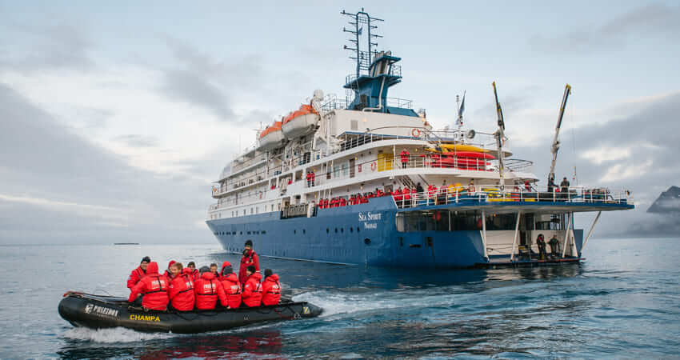

Best overall for maximum time ashore and genuine expedition access on this route.
Poseidon Expeditions has operated small-ship polar expeditions since 1999 — 27 years of Arctic and Antarctic experience anchored by one vessel, the 114-passenger M/V Sea Spirit. The ship’s ice-strengthened hull and high maneuverability allow access to narrow fjords and remote bays that larger vessels cannot enter.
The expedition program includes up to 3 landings per day, with an average of approximately 2.5 hours of off-ship activity per landing. Optional activities — sea kayaking through iceberg formations and overnight camping under the Antarctic sky — are available at additional cost and fill quickly. The onboard expedition team comprises naturalists, wildlife biologists, geologists, and historians.
Pros
- Up to 3 landings per day averaging 2.5 hours each — highest shore time of operators reviewed
- All guests ashore simultaneously; no rotation system means no waiting
- Optional sea kayaking and overnight camping in Antarctica
Cons
- One ship limits departure date flexibility vs. multi-vessel operators
- Optional activities (kayaking, camping) book out months in advance